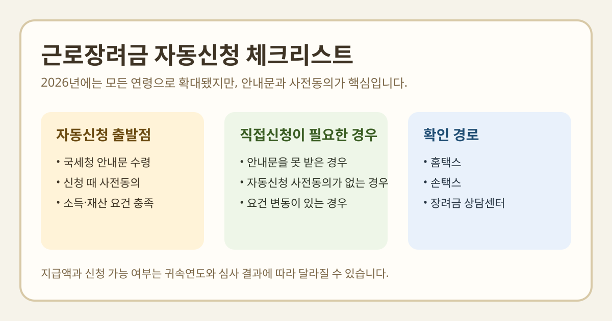

근로장려금 자동신청을 찾는 분들이 가장 많이 헷갈리는 부분은 “올해부터 전부 자동이냐”, “내가 따로 동의해야 하냐”, “안내문을 못 받았으면 끝이냐”입니다. 자동신청 확대 뉴스만 보면 편해진 것처럼 보이지만, 실제로는 안내 대상자 여부와 사전동의가 핵심입니다.
이 글은 2026년 3월 2일 국세청 보도참고자료와 홈택스·손택스 신청 안내를 기준으로 정리했습니다. 장려금은 소득·재산 심사 결과에 따라 달라질 수 있고, 정기신청 일정도 해마다 바뀔 수 있으니 실제 신청 직전에는 반드시 국세청 공식 페이지를 다시 확인하세요.

2026년에 달라진 핵심은 무엇인가요?
국세청은 2026년 3월 2일 공개한 자료에서 2025년 귀속분부터 자동신청제도를 모든 연령으로 확대해 운영한다고 밝혔습니다. 공식 설명상 확대 흐름은 2023년 귀속 65세 이상·중증장애인, 2024년 귀속 60세 이상, 2025년 귀속 모든 연령 순서입니다.
다만 이 문구를 “이제 누구나 알아서 자동 접수된다”로 받아들이면 안 됩니다. 같은 자료는 신청 안내 대상자가 신청하면서 자동신청에 사전동의한 경우를 전제로 설명하고 있습니다.
누가 자동신청 대상이 되나요?
- 국세청 신청안내문을 받은 사람
- 장려금 신청 시 자동신청 사전동의를 한 사람
- 향후 2년 동안 소득·재산 등 신청 요건을 충족하는 사람
국세청 자료에는 안내문을 받지 못해 직접 신청하는 경우는 자동신청 사전동의를 할 수 없다고 적혀 있습니다. 즉, 자동신청은 “모든 국민 대상 상시 자동화”가 아니라 안내 대상자 중심 제도로 이해하는 편이 정확합니다.
자동신청 사전동의를 하면 얼마나 유지되나요?
국세청 보도자료 기준으로, 하반기분 안내대상자가 이번에 장려금 신청을 하면서 자동신청에 사전동의하면 신청 요건을 충족하는 경우 2027년 귀속 정기분까지 자동으로 신청됩니다. 또 참고 문답에는 자동신청 사전동의를 하면 향후 2년간 별도 절차 없이 자동 신청된다고 설명돼 있습니다.
다만 사전동의를 했더라도 요건을 충족하지 못하면 자동신청이 되지 않습니다. 자동신청은 신청 편의를 줄여주는 장치이지, 자격 심사를 생략해주는 제도는 아닙니다.
안내문을 못 받았으면 어떻게 해야 하나요?
국세청은 안내문을 받지 못했더라도 본인이 요건을 충족한다고 판단하면 홈택스에서 직접신청할 수 있다고 안내합니다. 보도자료에는 경로도 같이 적혀 있습니다.
- 홈택스 로그인
- 장려금 메뉴로 이동
- 근로장려금(반기) 또는 해당 신청 메뉴 선택
- 직접입력 신청 진행
또 모바일 안내문, QR코드, ARS 1544-9944, 장려금 상담센터 1566-3636 같은 경로도 공식 자료에 함께 나와 있습니다. 다만 반기신청과 정기신청의 대상은 다를 수 있으니, 내 소득 종류가 근로소득만인지도 먼저 확인해야 합니다.
이번 3월 반기신청에서 특히 볼 부분
국세청은 같은 자료에서 2025년도에 근로소득만 있는 105만 가구에 대해 2026년 3월 1일부터 3월 16일까지 하반기분 근로장려금 신청을 받는다고 밝혔습니다. 반면 근로소득과 사업소득 또는 종교인소득이 함께 있으면 5월 정기신청 기간에 신청해야 한다고 안내했습니다.
즉, 자동신청 여부를 보기 전에 먼저 내가 반기신청 대상인지, 정기신청 대상인지를 구분해야 합니다. 여기서부터 틀리면 자동신청 기대 자체가 어긋날 수 있습니다.
직접 다시 확인하면 좋은 체크리스트
- 국세청 안내문을 실제로 받았는지
- 지난 신청 때 자동신청 사전동의를 했는지
- 올해 소득 형태가 근로소득만인지
- 소득·재산 심사 요건을 여전히 충족하는지
- 자동신청이 되지 않으면 홈택스 직접신청 경로를 바로 쓸 수 있는지
한 번에 요약하면
- 근로장려금 자동신청은 2025년 귀속분부터 모든 연령으로 확대됐습니다.
- 하지만 안내문을 받은 신청안내 대상자가 사전동의해야 자동신청 구조가 작동합니다.
- 안내문을 받지 못한 직접신청자는 자동신청 사전동의를 할 수 없다고 국세청이 안내합니다.
- 반기신청과 정기신청 대상은 다를 수 있으니 소득 종류를 먼저 구분해야 합니다.
- 지급액과 자격은 바뀔 수 있으므로 신청 전 국세청 최신 안내를 다시 보는 편이 안전합니다.
자주 묻는 질문
Q. 2026년부터 누구나 근로장려금이 자동신청되나요?
아닙니다. 국세청 자료 기준으로는 신청안내 대상자가 장려금 신청 시 자동신청 사전동의를 한 경우가 기본 조건입니다.
Q. 안내문을 못 받았으면 자동신청도 못 하나요?
공식 문답에는 안내문을 받지 못해 직접 신청하는 경우 자동신청 사전동의를 할 수 없다고 나옵니다. 대신 홈택스에서 직접신청은 가능합니다.
Q. 사전동의만 하면 무조건 지급되나요?
그렇지 않습니다. 국세청은 사전동의를 했더라도 신청 요건을 충족하지 못하면 자동신청이 되지 않는다고 설명합니다.
공식 링크
신청 기간, 자격, 예상 지급액, 자동신청 유지 기간은 귀속연도와 심사 결과에 따라 달라질 수 있습니다. 실제 신청 전에는 위 국세청 공식 페이지의 최신 안내를 다시 확인하세요.